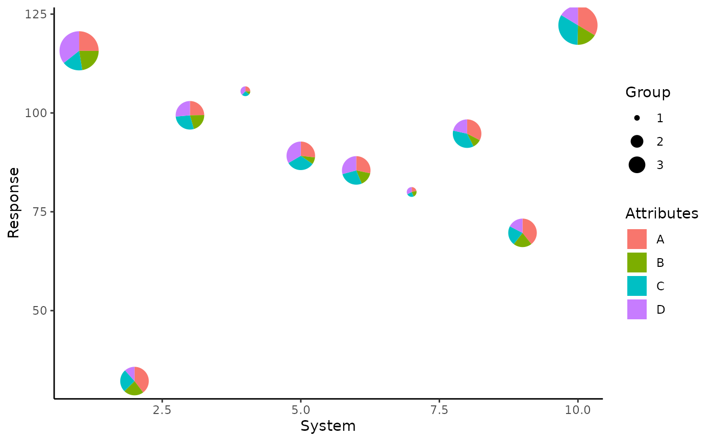

scale_radius_*() is useful for adjusting the radius of the pie glyphs.
Arguments
- ...
Arguments passed on to
continuous_scaleminor_breaksOne of:
NULLfor no minor breakswaiver()for the default breaks (one minor break between each major break)A numeric vector of positions
A function that given the limits returns a vector of minor breaks. Also accepts rlang lambda function notation. When the function has two arguments, it will be given the limits and major breaks.
oobOne of:
Function that handles limits outside of the scale limits (out of bounds). Also accepts rlang lambda function notation.
The default (
scales::censor()) replaces out of bounds values withNA.scales::squish()for squishing out of bounds values into range.scales::squish_infinite()for squishing infinite values into range.
na.valueMissing values will be replaced with this value.
expandFor position scales, a vector of range expansion constants used to add some padding around the data to ensure that they are placed some distance away from the axes. Use the convenience function
expansion()to generate the values for theexpandargument. The defaults are to expand the scale by 5% on each side for continuous variables, and by 0.6 units on each side for discrete variables.positionFor position scales, The position of the axis.
leftorrightfor y axes,toporbottomfor x axes.callThe
callused to construct the scale for reporting messages.superThe super class to use for the constructed scale
- range
a numeric vector of length 2 that specifies the minimum and maximum size of the plotting symbol after transformation.
- unit
Unit for the radius of the pie glyphs. Default is "cm", but other units like "in", "mm", etc. can be used.
- values
a set of aesthetic values to map data values to. The values will be matched in order (usually alphabetical) with the limits of the scale, or with
breaksif provided. If this is a named vector, then the values will be matched based on the names instead. Data values that don't match will be givenna.value.- breaks
One of:
NULLfor no breakswaiver()for the default breaks computed by the transformation objectA numeric vector of positions
A function that takes the limits as input and returns breaks as output (e.g., a function returned by
scales::extended_breaks()). Also accepts rlang lambda function notation.
- na.value
The aesthetic value to use for missing (
NA) values
Examples
## Load libraries
library(dplyr)
library(tidyr)
library(ggplot2)
## Simulate raw data
set.seed(789)
plot_data <- data.frame(y = rnorm(10, 100, 30),
x = 1:10,
group = sample(size = 10,
x = c(1, 2, 3),
replace = TRUE),
A = round(runif(10, 3, 9), 2),
B = round(runif(10, 1, 5), 2),
C = round(runif(10, 3, 7), 2),
D = round(runif(10, 1, 9), 2))
head(plot_data)
#> y x group A B C D
#> 1 115.72290 1 3 4.67 4.15 3.15 6.64
#> 2 32.17696 2 2 6.98 4.01 4.58 2.03
#> 3 99.40961 3 2 5.94 4.99 6.71 6.34
#> 4 105.49420 4 1 4.63 1.78 4.68 6.83
#> 5 89.15946 5 2 5.62 1.66 6.68 7.00
#> 6 85.46548 6 2 6.50 3.57 6.22 6.71
## Create plot
p <- ggplot(data = plot_data)+
geom_pie_glyph(aes(x = x, y = y, radius = group),
slices = c('A', 'B', 'C', 'D'))+
labs(y = 'Response', x = 'System',
fill = 'Attributes')+
theme_classic()
p + scale_radius_continuous(range = c(0.2, 0.5))
q <- ggplot(data = plot_data)+
geom_pie_glyph(aes(x = x, y = y,
radius = as.factor(group)),
slices = c('A', 'B', 'C', 'D'))+
labs(y = 'Response', x = 'System',
fill = 'Attributes', radius = 'Group')+
theme_classic()
q + scale_radius_discrete(range = c(0.05, 0.2), unit = 'in',
name = 'Group')

q + scale_radius_manual(values = c(2, 6, 4), unit = 'mm',
labels = paste0('G', 1:3), name = 'G')